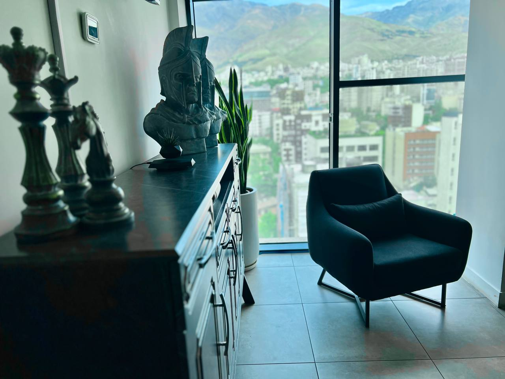
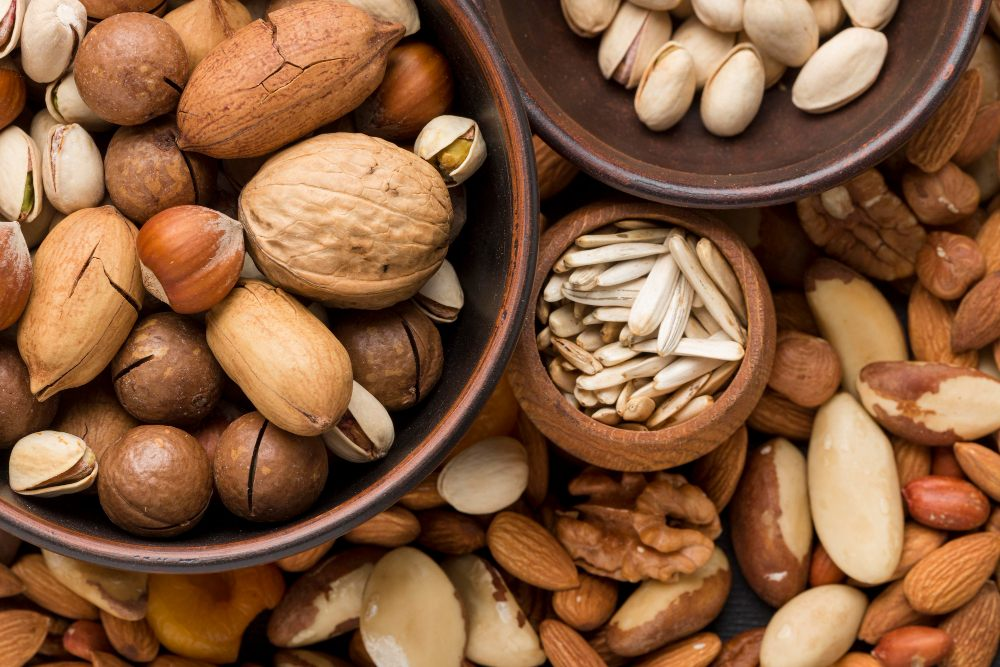

واردات مواد اولیه برای تولید تایر
واردات کائوچو و مواد شیمیایی با کیفیت بالا از چین و مالزی برای تولید لاستیک و تایر
شرکت زرین گستران با تخصص در صادرات و واردات، خدمات تجاری با کیفیتی را در سطح بینالمللی ارائه میدهد
گروه زرین گستران هفت آسمان یک شرکت برجسته و پیشرو در صنعت واردات، صادرات و فعالیتهای تجاری است که با بیش از دو دهه تجربه موفقیتآمیز، به ارائه خدمات گسترده و با کیفیت در انواع صنایع مختلف میپردازد. این شرکت علاوه بر صادرات خشکبار، میوهجات و صیفیجات به بازارهای بینالمللی، فعالیتهای گستردهای در زمینه صادرات محصولات غذایی و مواد شوینده به مناطق مختلف دنیا دارد. همچنین، این شرکت واردات انواع ماشینآلات صنعتی، تجهیزات پیچیده و مواد اولیه مورد نیاز از منابع بینالمللی را انجام میدهد تا به بهبود و توسعه صنایع داخلی کمک کند.
هدف اصلی گروه زرین گستران هفت آسمان، ارائه خدمات با کیفیت بالا و ایجاد روابط تجاری بینالمللی پایدار و بلندمدت است. این شرکت با بهرهگیری از تخصص و تجربه فراوان، به دنبال توسعه مستمر و گسترش فعالیتهای خود در بازارهای جهانی میباشد و نقش بسیار مهمی در توسعه اقتصادی منطقه و کشورهای مختلف دارد.
فعالیتهای تجاری
از مبدأ تا مقصد، در کنار شما هستیم
واردات کائوچو و مواد شیمیایی با کیفیت بالا از چین و مالزی برای تولید لاستیک و تایر
صادرات محصولات شوینده به کشورهای دیگر شامل تحویل محصولات با کیفیت بالا و دوستدار محیطزیست به بازارهای مختلف میشود

صادرات انواع خشکبار و میوه و صیفی جات به کشور های حوزه خلیج فارس از جمله امارات متحده عربی و عمان